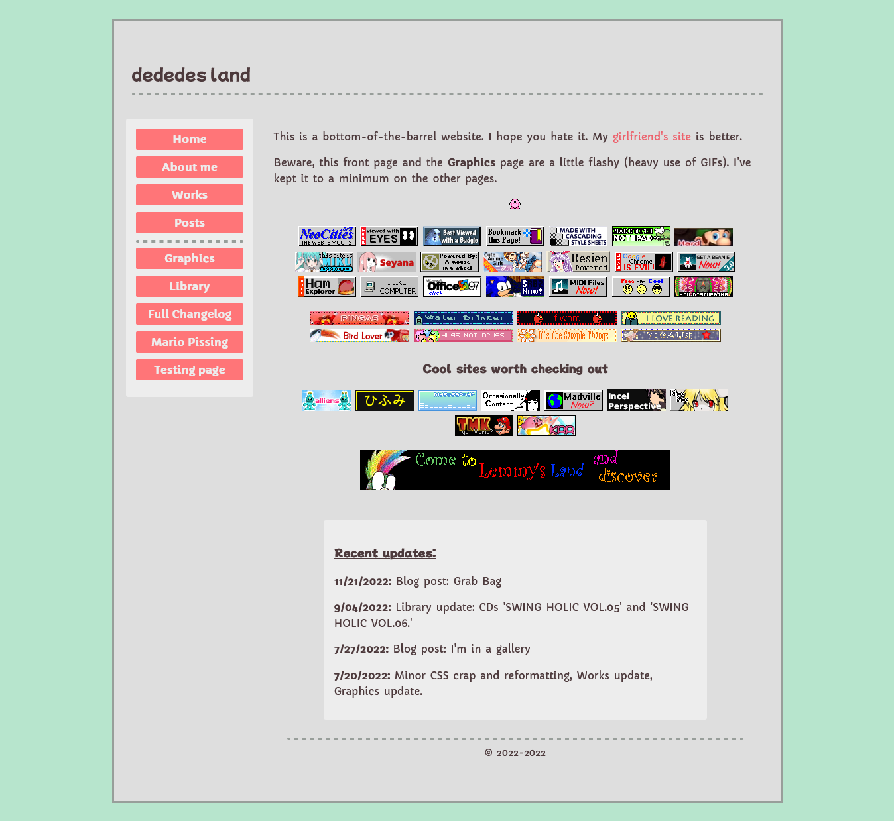

It's here!
Mostly, anyway! By next week I will have the individual CD pages and Portal pages up, but I think what I have is presentable. Welcome to Version Two!!! Many many thanks to Tip to helping out with the new code and introducing better habits to me. Let us pay respects to Version One.
